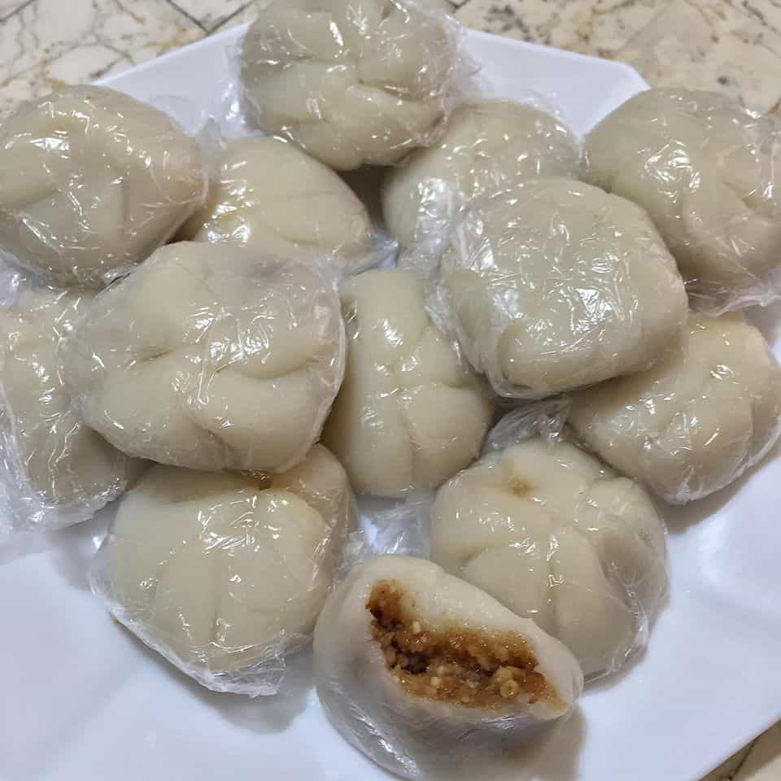
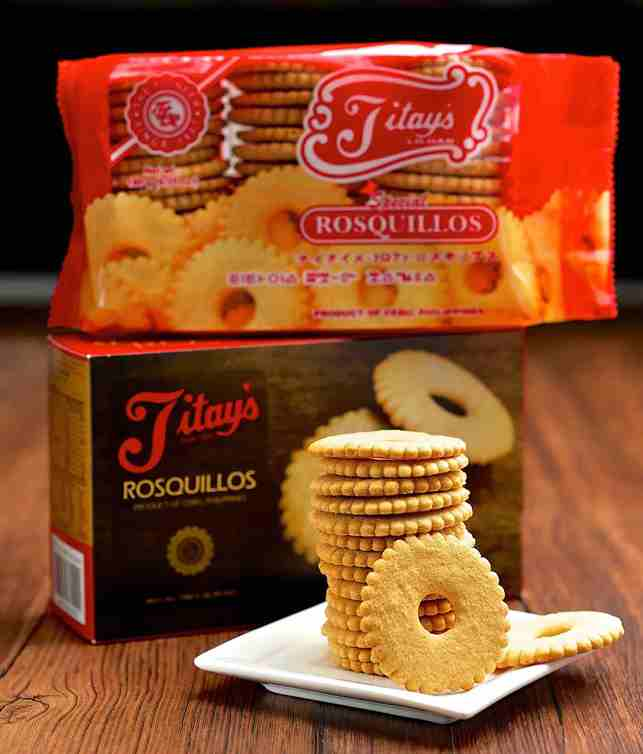
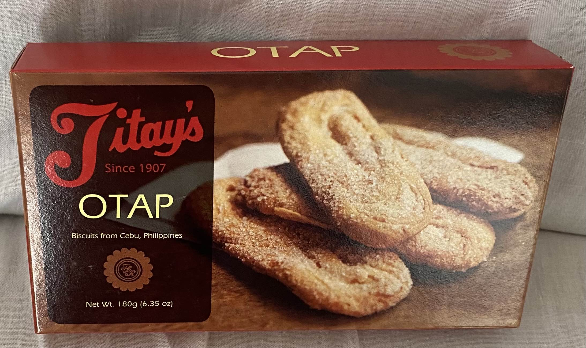
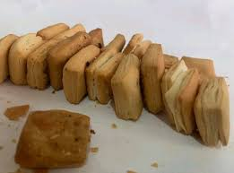
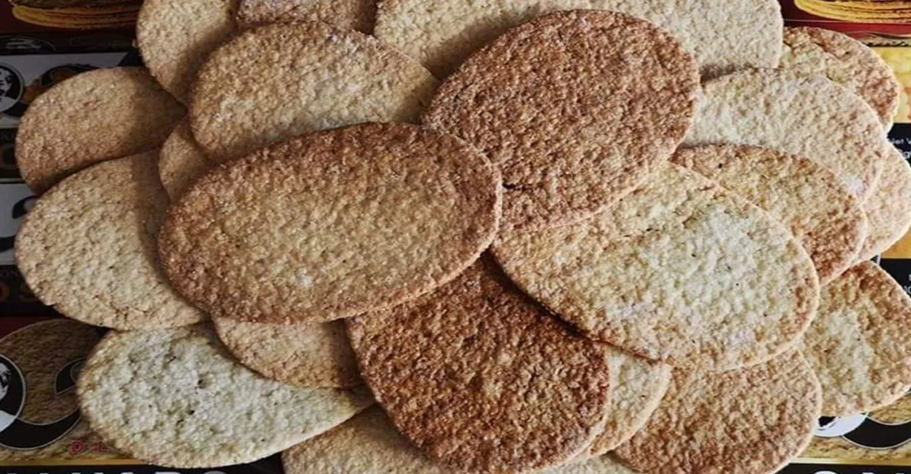
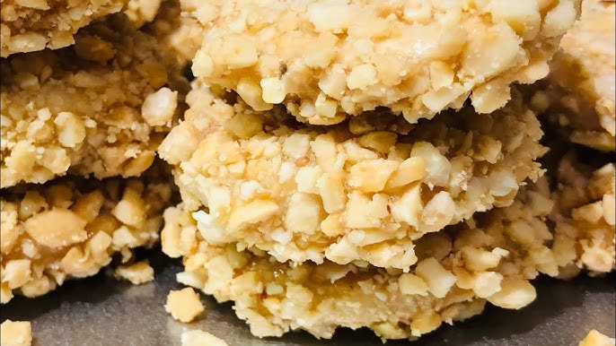

A LOCAL FAVORITE
Masi
Soft, chewy rice bites with a sweet peanut center. A little taste of everyday Liloan.
TASTE LILOAN
Small bites. Long traditions. Meet the treats that make a visit to Liloan a little sweeter.

A LOCAL FAVORITE
Soft, chewy rice bites with a sweet peanut center. A little taste of everyday Liloan.

A LOCAL FAVORITE
The delicate, ring-shaped cookies that have become a signature of the town.

A LOCAL FAVORITE
Flaky layers, a light sugar coating, and the perfect excuse for a coffee break.

A LOCAL FAVORITE
Little golden biscuits with a satisfying crunch. Pack a few for the journey.

A LOCAL FAVORITE
Thin, crisp coconut treats to share with friends back home.

A LOCAL FAVORITE
Crunchy biscuits finished with toasted peanuts for a sweet, nutty bite.
KEEP THE DISCOVERY GOING